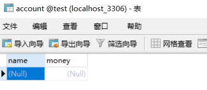

1.JdbcTemplate介绍
它是spring框架中提供的一个对象，是对原始繁琐的Jdbc API对象的简单封装。
spring框架为我们提供了很多的操作模板类。例如：操作关系型数据的JdbcTemplate和HibernateTemplate，操作nosql数据库的RedisTemplate，操作消息队列的JmsTemplate等等
2.JDBC基本使用 ①导入spring-jdbc和spring-tx坐标
②创建数据库表和实体
③创建JdbcTemplate对象
④执行数据库操作
1.导入maven 1 2 3 4 5 6 7 8 9 10 11 12 13 14 15 16 17 18 19 20 21 22 23 24 25 26 27 28 29 30 31 32 33 34 35 36 37 38 39 40 41 42 43 44 45 46 47 48 49 50 51 52 53 54 55 56 57 58 59 60 61 62 63 64 65 66 67 68 69 70 71 72 73 74 75 76 77 78 79 80 81 82 83 84 85 86 87 88 89 90 91 92 93 94 95 96 97 98 99 100 101 102 103 104 <?xml version="1.0" encoding="UTF-8"?> <project xmlns ="http://maven.apache.org/POM/4.0.0" xmlns:xsi ="http://www.w3.org/2001/XMLSchema-instance" xsi:schemaLocation ="http://maven.apache.org/POM/4.0.0 http://maven.apache.org/xsd/maven-4.0.0.xsd" > <modelVersion > 4.0.0</modelVersion > <groupId > org.example</groupId > <artifactId > Spring_jdbc</artifactId > <version > 1.0-SNAPSHOT</version > <dependencies > <dependency > <groupId > mysql</groupId > <artifactId > mysql-connector-java</artifactId > <version > 5.1.32</version > </dependency > <dependency > <groupId > c3p0</groupId > <artifactId > c3p0</artifactId > <version > 0.9.1.2</version > </dependency > <dependency > <groupId > com.alibaba</groupId > <artifactId > druid</artifactId > <version > 1.1.10</version > </dependency > <dependency > <groupId > junit</groupId > <artifactId > junit</artifactId > <version > 4.12</version > <scope > test</scope > </dependency > <dependency > <groupId > org.springframework</groupId > <artifactId > spring-context</artifactId > <version > 5.0.5.RELEASE</version > </dependency > <dependency > <groupId > org.springframework</groupId > <artifactId > spring-test</artifactId > <version > 5.0.5.RELEASE</version > </dependency > <dependency > <groupId > org.springframework</groupId > <artifactId > spring-web</artifactId > <version > 5.0.5.RELEASE</version > </dependency > <dependency > <groupId > org.springframework</groupId > <artifactId > spring-webmvc</artifactId > <version > 5.0.5.RELEASE</version > </dependency > <dependency > <groupId > javax.servlet</groupId > <artifactId > javax.servlet-api</artifactId > <version > 3.0.1</version > <scope > provided</scope > </dependency > <dependency > <groupId > javax.servlet.jsp</groupId > <artifactId > javax.servlet.jsp-api</artifactId > <version > 2.2.1</version > <scope > provided</scope > </dependency > <dependency > <groupId > com.fasterxml.jackson.core</groupId > <artifactId > jackson-core</artifactId > <version > 2.9.0</version > </dependency > <dependency > <groupId > com.fasterxml.jackson.core</groupId > <artifactId > jackson-databind</artifactId > <version > 2.9.0</version > </dependency > <dependency > <groupId > com.fasterxml.jackson.core</groupId > <artifactId > jackson-annotations</artifactId > <version > 2.9.0</version > </dependency > <dependency > <groupId > commons-fileupload</groupId > <artifactId > commons-fileupload</artifactId > <version > 1.3.1</version > </dependency > <dependency > <groupId > commons-io</groupId > <artifactId > commons-io</artifactId > <version > 2.3</version > </dependency > <dependency > <groupId > org.springframework</groupId > <artifactId > spring-jdbc</artifactId > <version > 5.0.5.RELEASE</version > </dependency > <dependency > <groupId > org.springframework</groupId > <artifactId > spring-tx</artifactId > <version > 5.0.5.RELEASE</version > </dependency > </dependencies > </project >
2.创建数据库表和实体
1 2 3 4 5 6 7 8 9 10 11 12 13 14 15 16 17 18 19 20 21 22 23 24 25 26 27 28 public class Account private String name; private double money; @Override public String toString () return "Account{" + "name='" + name + '\'' + ", money=" + money + '}' ; } public String getName () return name; } public void setName (String name) this .name = name; } public double getMoney () return money; } public void setMoney (double money) this .money = money; } }

1 2 3 4 5 6 7 8 9 10 11 12 13 14 15 @Test public void test1 () throws PropertyVetoException ComboPooledDataSource dataSource = new ComboPooledDataSource(); dataSource.setDriverClass("com.mysql.jdbc.Driver" ); dataSource.setJdbcUrl("jdbc:mysql://localhost:3306/test" ); dataSource.setUser("root" ); dataSource.setPassword("root" ); JdbcTemplate jdbcTemplate = new JdbcTemplate(); jdbcTemplate.setDataSource(dataSource); int row = jdbcTemplate.update("insert into account values(?,?)" , "tom2" , 5000 ); System.out.println(row); }
3.spring产生模板对象 1.导入maven 1 2 3 4 5 6 7 8 9 10 11 12 13 14 15 16 17 18 19 20 21 22 23 24 25 26 27 28 29 30 31 32 33 34 35 36 37 38 39 40 41 42 43 44 45 46 47 48 49 50 51 52 53 54 55 56 57 58 59 60 61 62 63 64 65 66 67 68 69 70 71 72 73 74 75 76 77 78 79 80 81 82 83 84 85 86 87 88 89 90 91 92 93 94 95 96 97 98 99 100 101 102 103 104 <?xml version="1.0" encoding="UTF-8"?> <project xmlns ="http://maven.apache.org/POM/4.0.0" xmlns:xsi ="http://www.w3.org/2001/XMLSchema-instance" xsi:schemaLocation ="http://maven.apache.org/POM/4.0.0 http://maven.apache.org/xsd/maven-4.0.0.xsd" > <modelVersion > 4.0.0</modelVersion > <groupId > org.example</groupId > <artifactId > Spring_jdbc</artifactId > <version > 1.0-SNAPSHOT</version > <dependencies > <dependency > <groupId > mysql</groupId > <artifactId > mysql-connector-java</artifactId > <version > 5.1.32</version > </dependency > <dependency > <groupId > c3p0</groupId > <artifactId > c3p0</artifactId > <version > 0.9.1.2</version > </dependency > <dependency > <groupId > com.alibaba</groupId > <artifactId > druid</artifactId > <version > 1.1.10</version > </dependency > <dependency > <groupId > junit</groupId > <artifactId > junit</artifactId > <version > 4.12</version > <scope > test</scope > </dependency > <dependency > <groupId > org.springframework</groupId > <artifactId > spring-context</artifactId > <version > 5.0.5.RELEASE</version > </dependency > <dependency > <groupId > org.springframework</groupId > <artifactId > spring-test</artifactId > <version > 5.0.5.RELEASE</version > </dependency > <dependency > <groupId > org.springframework</groupId > <artifactId > spring-web</artifactId > <version > 5.0.5.RELEASE</version > </dependency > <dependency > <groupId > org.springframework</groupId > <artifactId > spring-webmvc</artifactId > <version > 5.0.5.RELEASE</version > </dependency > <dependency > <groupId > javax.servlet</groupId > <artifactId > javax.servlet-api</artifactId > <version > 3.0.1</version > <scope > provided</scope > </dependency > <dependency > <groupId > javax.servlet.jsp</groupId > <artifactId > javax.servlet.jsp-api</artifactId > <version > 2.2.1</version > <scope > provided</scope > </dependency > <dependency > <groupId > com.fasterxml.jackson.core</groupId > <artifactId > jackson-core</artifactId > <version > 2.9.0</version > </dependency > <dependency > <groupId > com.fasterxml.jackson.core</groupId > <artifactId > jackson-databind</artifactId > <version > 2.9.0</version > </dependency > <dependency > <groupId > com.fasterxml.jackson.core</groupId > <artifactId > jackson-annotations</artifactId > <version > 2.9.0</version > </dependency > <dependency > <groupId > commons-fileupload</groupId > <artifactId > commons-fileupload</artifactId > <version > 1.3.1</version > </dependency > <dependency > <groupId > commons-io</groupId > <artifactId > commons-io</artifactId > <version > 2.3</version > </dependency > <dependency > <groupId > org.springframework</groupId > <artifactId > spring-jdbc</artifactId > <version > 5.0.5.RELEASE</version > </dependency > <dependency > <groupId > org.springframework</groupId > <artifactId > spring-tx</artifactId > <version > 5.0.5.RELEASE</version > </dependency > </dependencies > </project >
2.创建数据库表和实体
1 2 3 4 5 6 7 8 9 10 11 12 13 14 15 16 17 18 19 20 21 22 23 24 25 26 27 28 public class Account private String name; private double money; @Override public String toString () return "Account{" + "name='" + name + '\'' + ", money=" + money + '}' ; } public String getName () return name; } public void setName (String name) this .name = name; } public double getMoney () return money; } public void setMoney (double money) this .money = money; } }
3.Spring产生模板对象
先配置数据源，然后配置JdbcTemplate，然后将数据源注入到JdbcTemplate中，
通过Spring容器获得JdbcTemplate对象，调用JdbcTemplate对象的update方法，传入sql语句及参数完成插入数据的操作
1,把jdbc数据源对象抽取成一个jdbc.propperties对象
1 2 3 4 jdbc.driver =com.mysql.jdbc.Driver jdbc.url =jdbc:mysql://localhost:3306/test jdbc.username =root jdbc.password =root
1 2 3 4 5 6 7 8 9 10 11 12 13 14 15 16 17 18 19 20 21 22 23 24 25 26 27 <?xml version="1.0" encoding="UTF-8"?> <beans xmlns ="http://www.springframework.org/schema/beans" xmlns:xsi ="http://www.w3.org/2001/XMLSchema-instance" xmlns:context ="http://www.springframework.org/schema/context" xsi:schemaLocation =" http://www.springframework.org/schema/beans http://www.springframework.org/schema/beans/spring-beans.xsd http://www.springframework.org/schema/context http://www.springframework.org/schema/context/spring-context.xsd " > <context:property-placeholder location ="classpath:jdbc.properties" /> <beans > <bean id ="dataSource" class ="com.mchange.v2.c3p0.ComboPooledDataSource" > <property name ="driverClass" value ="${jdbc.driver}" /> <property name ="jdbcUrl" value ="${jdbc.url}" /> <property name ="user" value ="${jdbc.username}" /> <property name ="password" value ="${jdbc.password}" /> </bean > <bean id ="jdbcTemplate" class ="org.springframework.jdbc.core.JdbcTemplate" > <property name ="dataSource" ref ="dataSource" /> </bean > </beans > </beans >
1 2 3 4 5 6 7 8 @Test public void test2 () ApplicationContext app = new ClassPathXmlApplicationContext("applicationContext.xml" ); JdbcTemplate jdbcTemplate = app.getBean(JdbcTemplate.class); int row = jdbcTemplate.update("insert into account values(?,?)" , "zhangsan" , 5000 ); System.out.println(row); }
4.JDBC增删改查 ①导入spring-jdbc和spring-tx坐标
②创建数据库表和实体
③创建JdbcTemplate对象
JdbcTemplate jdbcTemplate = new JdbcTemplate();
④执行数据库操作
更新操作：
jdbcTemplate.update (sql,params)
查询操作：
jdbcTemplate.query (sql,Mapper,params)
jdbcTemplate.queryForObject(sql,Mapper,params)
1 2 3 4 5 6 7 8 9 10 11 12 13 14 15 16 17 18 19 20 21 22 23 24 25 26 27 28 29 30 31 32 33 34 35 36 37 @RunWith(SpringJUnit4ClassRunner.class) @ContextConfiguration("classpath:applicationContext.xml") public class JdbcTemplateCRUDTest @Autowired private JdbcTemplate jdbcTemplate; @Test public void testQueryCount () Long count = jdbcTemplate.queryForObject("select count(*) from account" , long .class); System.out.println(count); } @Test public void testQueryOne () Account account = jdbcTemplate.queryForObject("select * from account where name = ?" , new BeanPropertyRowMapper<Account>(Account.class), "zhangsan" ); System.out.println(account); } @Test public void testQueryAll () List<Account> list = jdbcTemplate.query("select * from account" , new BeanPropertyRowMapper<Account>(Account.class)); System.out.println(list); } @Test public void testUpdate () jdbcTemplate.update("update account set money = ? where name = ? " , 10000 , "tom2" ); } @Test public void testDelete () jdbcTemplate.update("delete from account where name = ?" , "tom3" ); } }